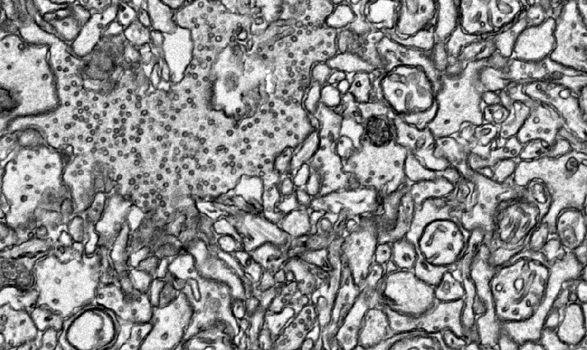
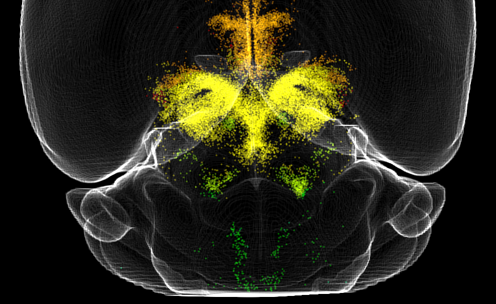

Brain connectomics involves studying the brain's neural wiring diagram to better understand the principles of brain computation. Building a wiring diagram at the neuronal synapse level has been controversial due to the lack of reliable technologies. Large-scale simulation models based on limited wiring information often require numerous assumptions, making them less convincing than more straightforward, simplified models. However, recent breakthroughs in high-throughput volume electron microscopy, automated sample sectioning and collection, and artificial intelligence have made it possible to construct large-scale wiring diagrams. With these advanced tools, we aim to reconstruct the neural wiring of a 10 cubic millimeter brain volume to uncover intrinsic connectivity patterns.

Light sheet fluorescent microscopy (LSFM) has become a widely used optical imaging method for both functional and structural imaging, especially suitable for large intact samples. The higher pixel rate, optical sectioning ability and lower phototoxicity provide unique advantages to other common techniques like wide-field, confocal, two-photon microscopes. However, high performance LSFM requires expensive and cumbersome LASER generator as well as high-cost optical parts, which make it less accessible and scalable. We designed a new LSFM implementation named projector light sheet microscopy (pLSM). Using off-the-bench components, consumer grade portable LASER projectors as light source, and open-source control interface, it allows for rapid, high-resolution imaging of large biological samples, including whole mouse brains and human brain samples with various clearing methods, at a fraction of cost compared to high-end implementations. We further demonstrate that the data generated by pLSM can be analyzed using whole brain quantification methods with similar results as established LSFM system. pLSM makes the large scale high-performance light sheet imaging more accessible and scalable.

Brain-wide sub-cellular resolution imaging provides unique insights into entire system mappings and systematic alterations. Compared with studies based on sample sectioning for more focused targets, whole brain mapping avoids the sectioning induced misalignment and target lost, provides a full view of the system, and gives more unbiased output. However, to extract information of interest from such sparse, high dimensional, high variation images remain challenging. Multiple tools provide analysis pipelines but each with limitations include limited generalizability, unable for data with higher dimension than 2D images, high computational cost, etc.
We designed suiteWB, which is a versatile, multi-purpose whole brain alignment, segmentation and analysis pipeline which enables unbiased investigation of large scale light sheet imaging data. And with suiteWB, we demonstrate its usage by applying in real scientific questions, which is investigating whole brain dopamine system alterations due to chronic ketamine treatment.

Antibody based whole brain immunostaining is mostly relying on the passive diffusion within the tissue. Although multiple permeabilization methods are used in protocols like iDISCO, including methanol pretreatment, detergent (TritonX-100, Tween-20, etc.) based permeabilization, and penetration enhancer like dimethyl sulfoxide (DMSO), immunostaining process can still take more than 20 days (10 days primary antibody incubation and 10 days secondary antibody incubation) for whole mouse brain. This will strongly slow down the process for rapid whole brain level screening. We designed our protocol for aptamer-based labeling which gives the potential of rapid, uniform large tissue quantitative labeling.